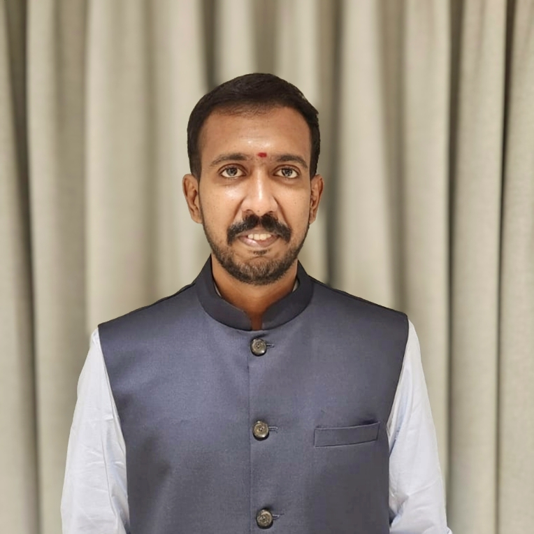

Welcome to my personal webpage. I am a Researcher at the Centre for Development of Advanced Computing (C-DAC), Bengaluru. I have completed my Ph.D. in the Department of Mathematics and Computing, specializing in Cryptology, at IIIT Vadodara under the supervision of Dr. Dibyendu Roy.
Current Position
Senior Project Engineer
Centre for Development of Advanced Computing (C-DAC), Bengaluru
Focus: Cryptology and Hardware Security
Centre for Development of Advanced Computing (C-DAC), Bengaluru
Focus: Cryptology and Hardware Security
Academic Qualifications
- M.Sc. in Mathematics — NIT Jamshedpur
- B.Sc. in Mathematics and Computer Science — SASTRA University
Research Interests
- Fault Attacks
- Physically Unclonable Functions
Memberships
- Life Member — Cryptology Research Society of India (CRSI)
- Life Member — Ramanujan Mathematical Society (RMS)
Professional Experience
- Teaching Assistant — IIIT Vadodara
- Junior Research Fellow (SERB Project) — IIIT Vadodara
- Associate — Machine Learning Project with AWS
Publications
- R Radheshwar, Dibyendu Roy, Notan Roy and Madhav Verma, "Differential Fault Attack on Dasta and Fasta" . IEEE Access, 2026.
- R Radheshwar, Dibyendu Roy, and Pantelimon Stanica. "Multipath PA-PUFs generate all Boolean functions" . Designs, Codes and Cryptography, Volume 94 (104), Springer, 2026.
- R Radheshwar and Dibyendu Roy. "Differential Fault Attack on ChaosForge" . In the proceedings of 6th International Conference on Recent Advances in Information Technology (RAIT), IEEE, 2025.
- R. Radheshwar, Meenakshi Kansal, Pierrick Méaux, Dibyendu Roy. "Differential Fault Attack on Rasta and FiLIPDSM" . IEEE Transactions on Computers, Volume 72(8), pp. 2418-2425, 2023.
Invited Talks
-
From Arbiter PUFs to Boolean Functions
Invited Symposium Talk, RMS 2026, MIT Bengaluru. -
Differential Fault Attacks: Theory and Practice
Guest Speaker, Conclave on Applied Cryptography and Machine Learning 2026, Amrita Vishwa Vidyapeetham Coimbatore.
Contact
Email: radheshwar2@gmail.com